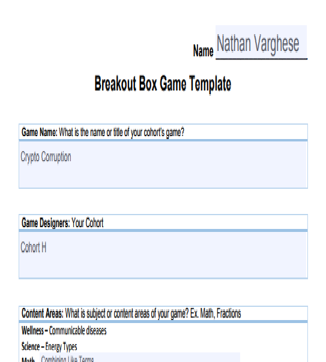

The Breakout Box Project was introduced to us in Wellness. The project was to strengthen our understanding of Communicable Diseases. The project was split into 4 classes, Language Arts, Science, Math, and Wellness. We had clues for all classes except Language Arts and a Wellness and Math story. The Driving Question was different for each class. We wrote facilitator instructions in Language Arts, facilitator instructions are for the facilitator to follow to set up the Breakout Box properly. They had to be very specific, because our boxes had to be set up in a specific way.
Now you may be wondering what a breakout box is. A Breakout Box is a box locked up with several locks. To open those locks you have to solve various clues. After solving the clues to get combinations, you use them on the locks, and unlock the box. Now some clues can be tricks, just there to throw you off, some can have hidden handwriting in UV, sometimes keys are hidden, anything is possible. But the catch is, you have to solve the box in a set amount of time. The clues we made were made in different classes. The clues had to show our understanding of some Unit/Principle/standard in that class. For ex. In our math clue, we had to show how to “combine like terms.”
Breakout Box Project
Reflective Commentary
a. Our biggest struggle in this project was unarguably communication. At the beginning of this project we would talk over one another, interrupt each other, be very loud, rude, and get nothing done. We overcame this struggle by assigning each person/group roles to keep people working. This really solved our issue, since now everyone had something to do.
c. If we had more time in this project, we would use the strategy above the very first day so we could start working immediately. In fact, right after coming up with a solution, we immediately caught up with the other groups pace. This shows if we had a solution earlier, we would have finished early!
d. In the Real World, doing this project would be very useful. I would have skills such as effective communication, patience, adaptation, and critical thinking. I learned these skills through various issues in our project. For example, I learned patience working in a loud environment. I would have these skills because I had to use them in our project multiple times.

My artifacts are my first and last draft of my facilitator instructions. The first one met most of the requirements. But after I got critique, I found out what I needed to add, and some adjustments I needed to add. I applied the critique and my final draft almost got a perfect score. I grew in the ability of application and problem solving. I had to apply the feedback I had received from my peers. I also had to decide what I was going to ignore, and I had to think hard about how I was going to implement my feedback, since some of it was unnecessary.